Обучение юриспруденции в сфере информационных технологий — это возможность получить квалификацию IT-юриста, совмещающего правовые знания и понимание цифровых процессов. Программы обучения включают изучение правовых аспектов регулирования цифровых платформ, защиты данных и интеллектуальной собственности, а также формирование профессиональных и практических навыков работы в сфере IT. Обучение проводится в дистанционном формате с применением цифровых технологий, что позволяет студентам совмещать учебу с профессиональной деятельностью и проходить курсы в любой удобной форме. Форматы обучения ориентированы на практику: слушатели получают опыт решения юридических задач, связанных с сопровождением IT-проектов и регулированием цифровых прав. Мы составили рейтинг программ, которые готовят цифровых юристов и помогают освоить необходимые правовые навыки для успешной карьеры в сфере информационных технологий.
Информация обновлена:
ТОП онлайн-курсов обучения на IT-юриста
- 🏆 Юрист в сфере IT — Moscow Digital School
- 🏆 Юрист в сфере IT — Московская Бизнес Академия (по промокоду onlinekursy скидка 🎁 10%)
- 🏆 Blockchain Lawyer — Moscow Digital School
- Цифровое право — Московская Бизнес Академия (по промокоду onlinekursy скидка 🎁 10%)
- Цифровое право — МИПО (по промокоду onlinekursy действует скидка 🎁 10% )
- Защита персональных данных — Moscow Digital School
- Юрист в e-com — Moscow Digital School
- Цифровое право — ИПО
- Юрист по интеллектуальным правам — Русская Школа Управления
- Право для финансов — SF Education (по промокоду onlinekursy скидка 🎁 15%)
- Основы цифрового права — НИУ ВШЭ
- Автоматизация юридических процессов — Нетология
Отличительные преимущества каждой дистанционной программы обучения юриспруденции в сфере информационных технологий и права
| № | Курс и школа | Отличительные преимущества | |
|---|---|---|---|
| 🥇 | Юрист в сфере IT — Moscow Digital School | Практические кейсы от МТС, Яндекса, OZON и ВШЭ; длительность 6 месяцев; удостоверение гос. образца; карьерное сопровождение и доступ к профессиональному сообществу после окончания обучения. | Перейти |
| 🥈 | Юрист в сфере IT — Московская Бизнес Академия | 70% практики; диплом о проф. переподготовке с внесением в ФРДО; рассрочка до 24 месяцев без переплаты; актуальная программа 2026 года и трудоустройство с карьерной поддержкой. | Перейти |
| 🥉 | Blockchain Lawyer — Moscow Digital School | Глубокая специализация в блокчейн-праве и криптовалютах; преподаватели — эксперты из ВТБ, МГУ, Wildberries, D&A Partners; практическое применение на кейсах Web3, NFT и смарт-контрактов. | Перейти |
| 4 | Цифровое право — Московская Бизнес Академия | Курс всего за 1 месяц; 65% выпускников трудоустраиваются в IT; удостоверение гос. образца с внесением в ФРДО; гибкий онлайн-график и налоговый вычет до 13%. | Перейти |
| 5 | Цифровое право — МИПО | Диплом о проф. переподготовке ФИС-ФРДО; 470 часов обучения; скидка 60%; гибкий график; международное признание диплома и кураторская поддержка. | Перейти |
| 6 | Защита персональных данных — Moscow Digital School | Обучение с фокусом на GDPR и 152-ФЗ; подготовка к сертификации DPO; преподаватели — эксперты Роскомнадзора и OZON; глубокие практические кейсы аудита компаний. | Перейти |
| 7 | Юрист в e-com — Moscow Digital School | Практика на кейсах Ozon и Авито; Legal English в подарок; преподаватели из ФАС и ВШЭ; акцент на правовое сопровождение маркетплейсов и e-commerce. | Перейти |
| 8 | Цифровое право — ИПО | 470 часов обучения; диплом гос. образца; преподаватели с опытом более 20 лет; рассылка анкет по компаниям-партнерам; реальная поддержка при трудоустройстве. | Перейти |
| 9 | Юрист по интеллектуальным правам — Русская Школа Управления | 70% практики и 30% теории; акцент на интеллектуальной собственности; гибкий график; доступ к базе знаний РШУ с более чем 270 видеокурсами. | Перейти |
| 10 | Право для финансов — SF Education | Международный диплом (ЕС, HISTES); цена 5 520 ₽; короткий курс (1 месяц, 38+ часов); акцент на праве в финансовой и цифровой сфере. | Перейти |
| 11 | Основы цифрового права — НИУ ВШЭ | Преподаватели — кандидаты наук и лидеры цифрового права; документ от ВШЭ; занятия в реальном времени; высокий академический уровень и практическая направленность. | Перейти |
| 12 | Автоматизация юридических процессов — Нетология | Два диплома (магистр ВШЭ + переподготовка Нетологии); проекты с партнерами LegalTech; обучение Legal Design и Python; отсрочка от армии и налоговый вычет. | Перейти |
1. 🏆 Юрист в сфере IT — Moscow Digital School
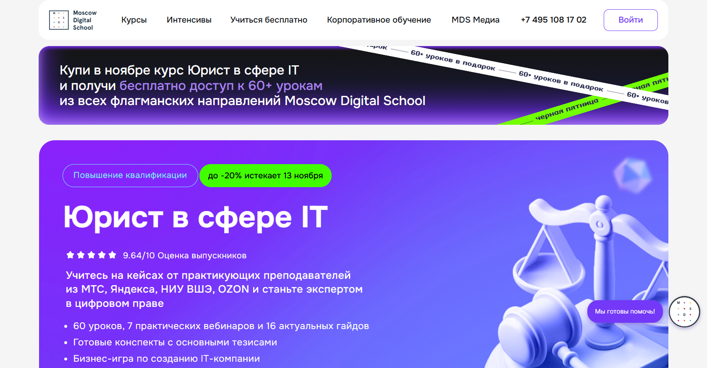- ✅ Официальный сайт: mosdigitals.ru
- 💸 Цена: от 152 000 ₽ до 320 000 ₽. Скидка до 20%.
- 💳 Рассрочка: 12 месяцев, от 12 666 ₽ в месяц.
- 📚 Формат: дистанционные занятия, видеолекции, тесты, практические вебинары, бизнес-игры и кейсы.
- ⏳ Продолжительность: 6 месяцев с неограниченным доступом к материалам после окончания курса.
- 📜 Документ: удостоверение о повышении квалификации государственного образца.
- 📝 Трудоустройство: карьерная консультация и сопровождение в развитии профессиональных навыков.
- 🔷 Для кого подходит курс: юристам, желающим перейти в сферу IT, руководителям цифровых бизнесов, топ-менеджерам IT-компаний и частнопрактикующим специалистам.
Особенности:
Программа разработана для цифровых юристов, желающих освоить аспекты цифровой сферы и правовые навыки в области информационных технологий. Обучение проводится в дистанционном формате и позволяет совмещать обучение с рабочим графиком. Курс включает практические навыки и реальные кейсы от специалистов из МТС, Яндекса, OZON и НИУ ВШЭ. Студенты изучают юридические аспекты цифровых платформ, правовое сопровождение IT проектов и регулирование цифровых технологий. Форматы обучения позволяют получить актуальные знания, которые применяются в юридической практике. После завершения обучения выпускники получают документ о повышении квалификации и доступ к профессиональному сообществу.
Чему учатся студенты:
- Анализировать правовые аспекты цифровых технологий
- Оформлять интеллектуальную собственность и защищать права IT-компаний
- Регулировать отношения с подрядчиками и разработчиками
- Решать юридические задачи в сфере цифровых продуктов
- Применять дистанционные технологии в юридической практике
- Создавать и сопровождать IT проекты в сфере информационных технологий
- Работать с электронными документами и защитой данных
Преподаватели:
- Алексей Минаев — заместитель управляющего директора OZON, эксперт в сфере IT и интернет-торговли.
- Анатолий Семенов — генеральный директор Ассоциации параллельного импорта, специалист по интеллектуальной собственности и антимонопольному законодательству.
- Доктор юридических наук — профессор СПбГУ, научный руководитель магистратуры «Информационное право и защита данных», руководитель Центра искусственного интеллекта и науки о данных.
Преимущества:
- Обучение проводится полностью онлайн с применением дистанционных технологий
- Курс включает практические занятия, кейсы и правовые разборы реальных IT проектов
- Программы включают современные темы цифровых прав и защиты интеллектуальных прав
- После окончания обучения вы получаете доступ к полезным материалам и гайдам
- Карьерный центр помогает выпускникам выстраивать успешную карьеру в сфере цифровых технологий
- Дистанционные форматы обучения позволяют совмещать обучение с работой
- Школа помогает оформить налоговый вычет до 13% от стоимости обучения
- Все обучение проходит онлайн и сохраняется доступ к материалам после окончания программы
Отзывы учеников:
Студенты отмечают удобный формат дистанционного обучения, качественные материалы и поддержку кураторов. Выпускники подчеркивают, что обучение помогает развить профессиональные навыки, применимые в сфере цифровых технологий. Отмечается высокая оценка преподавателей и возможность совмещать учебу с работой без потери качества процесса обучения.
Перейти на официальный сайт курса2. 🏆 Юрист в сфере IT — Московская Бизнес Академия
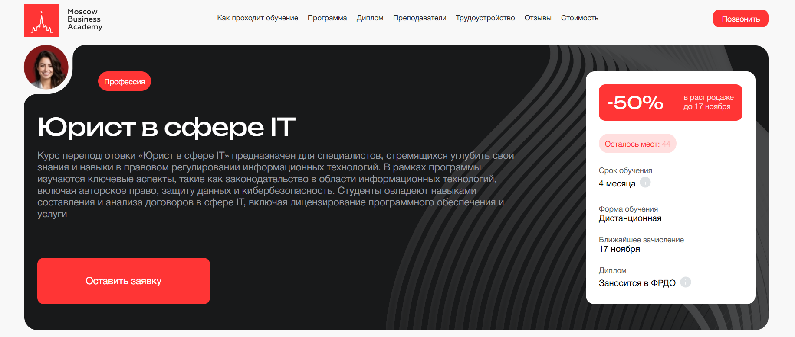- ✅ Официальный сайт: moscow.mba
- 💸 Цена обучения: 149 000 ₽ (скидка 50%).
- 💳 Рассрочка: 6 208 ₽/мес до 24 месяцев, без переплаты, первый платеж через месяц.
- 📚 Формат: дистанционный формат, видеолекции, практические задания, тесты, обратная связь от кураторов и преподавателей.
- ⏳ Продолжительность: 4 месяца.
- 📜 Документ: диплом о профессиональной переподготовке, заносится в ФРДО.
- 📝 Трудоустройство: помощь в составлении резюме, поиске вакансий и подготовке к собеседованиям.
- 🔷 Для кого подходит курс: для юристов, желающих развиваться в сфере информационных технологий, а также специалистов IT-компаний, стремящихся освоить правовые аспекты цифровых проектов.
Особенности:
Программа построена с применением дистанционных технологий и полностью проходит онлайн, что позволяет совмещать обучение с работой и личными делами. Обучение включает правовые навыки, касающиеся цифровых платформ, кибербезопасности и защиты интеллектуальной собственности. Студенты получают доступ к учебным материалам в удобном формате и могут проходить курс в любом удобном графике обучения. Программа направлена на формирование профессиональных навыков в регулировании цифровых процессов и юридических аспектов сферы IT. После окончания обучения слушатель получает диплом государственного образца и может начать карьеру в IT-компаниях. Курсы включают практические задания, основанные на реальной юридической практике. Дистанционное образование позволяет студенту развивать необходимые компетенции в сфере цифровых технологий и правового сопровождения бизнеса.
Чему учатся студенты:
- Осваивают правовые аспекты регулирования цифровых технологий и IT-проектов
- Изучают законодательство в области информационных технологий, защиты данных и интеллектуальных прав
- Получают практические навыки составления договоров и сопровождения IT-компаний
- Овладевают инструментами LegalTech и методологией SMART
- Разбираются в юридических процессах создания и коммерциализации цифровых продуктов
- Учатся применять правовое регулирование к реальным проектам
Преподаватели:
- Павел Патрикеев — практикующий юрист в сфере IT и доменных споров, эксперт по автоматизации юридической деятельности, автор научных публикаций.
- Мария Егиазарова — выпускник МГУ, бизнес-психолог, спикер в области юридического консалтинга.
- Василий Ильин — бизнес-тренер, специалист по управлению стрессом и мотивацией, эксперт в корпоративных коммуникациях.
Преимущества:
- Дистанционное обучение проходит в удобном онлайн-формате с доступом к платформе 24/7
- Возможность совмещать обучение с работой и личными делами
- Актуальная программа 2026 года, учитывающая изменения в законодательстве и цифровых технологиях
- 70% курса включает практические кейсы из реальной юридической практики
- Преподаватели — действующие эксперты в сфере IT-юриспруденции
- Государственная лицензия и аккредитации российских и международных организаций
- Помощь с трудоустройством и карьерными консультациями после завершения программы
- Возможность вернуть до 13% стоимости обучения через налоговый вычет
Отзывы учеников:
Студенты Московской Бизнес Академии отмечают высокий уровень преподавателей, практическую направленность программы и доступность материалов. Отзывы подчеркивают, что обучение проходит удобно, помогает получить актуальные знания и уверенно применять их в юридической практике в сфере цифровых технологий. Многие выпускники отмечают возможность быстро трудоустроиться и начать карьеру цифрового юриста уже в первые месяцы после окончания курса.
Перейти на официальный сайт курса3. 🏆 Blockchain Lawyer — Moscow Digital School
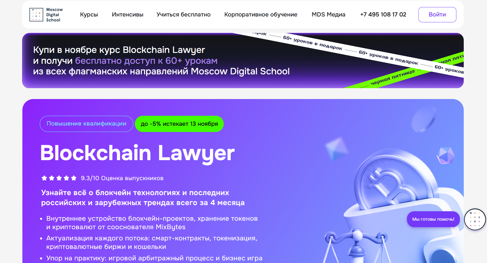- ✅ Официальный сайт: mosdigitals.ru
- 💸 Цена обучения: 155 800 ₽ (со скидкой 5%).
- 💳 Рассрочка: до 12 месяцев по 12 983 ₽ в месяц.
- 📚 Формат: дистанционный формат — видеолекции, живые вебинары, тесты и практические задания; обучение проходит онлайн в удобных для слушателей форматах.
- ⏳ Продолжительность: 5 месяцев (нагрузка около 6 часов в неделю).
- 📜 Документ: удостоверение о повышении квалификации государственного образца.
- 📝 Трудоустройство: доступ к карьерному центру, консультации, прожарки резюме и помощь в построении успешной карьеры в сфере цифровых технологий.
- 🔷 Для кого подходит курс: для юристов, адвокатов, владельцев бизнеса и частнопрактикующих специалистов, желающих развить правовые навыки в сфере цифровых платформ и it-проектов.
Особенности:
Программа ориентирована на подготовку специалистов в сфере цифровых технологий и правовых аспектов блокчейн-индустрии. Обучение проводится в дистанционном формате, что позволяет совмещать обучение с работой и личными делами. Курсы включают практические занятия, где студенты применяют знания к реальным кейсам и юридическим процессам. Образовательная программа Moscow Digital School помогает юристам осваивать аспекты цифровой экономики, регулирование информационных технологий и особенности защиты интеллектуальных прав. Обучение включает формы, удобные для любого графика обучения, а окончание курса дает возможность работать в сфере цифровых прав и сопровождения IT-проектов. Выпускники получают актуальные знания и профессиональные навыки, востребованные в современной цифровой среде.
Чему учатся студенты:
- Пониманию правовых аспектов блокчейн-проектов и криптовалют;
- Разработке и сопровождению смарт-контрактов;
- Юридическому сопровождению майнинговых компаний, криптобирж и NFT-проектов;
- Регулированию цифровых активов и защите данных;
- Применению правовых норм в сфере информационных технологий и Web3;
- Организации комплаенс-процедур и систем внутреннего контроля в криптопроектах;
- Налогообложению цифровых продуктов и токенов;
- Защите интеллектуальной собственности в сфере цифровых платформ.
Преподаватели:
- Олег Полежаев — к. ю. н., доцент РШЧП и МГЮА, специалист в области финансовых сделок и новых технологий в праве;
- Сергей Тетеруков — исполнительный секретарь ЕАГ по противодействию легализации преступных доходов и финансированию терроризма;
- Федор Иванов — директор по аналитике платформы безопасности цифровых активов «ШАРД»;
- Андрей Тугарин — управляющий партнер GMT Legal, эксперт в цифровом праве;
- Алексей Минаев — директор по стратегическому развитию Wildberries & Russ;
- Юрий Брисов — LL.M, партнёр D&A Partners, преподаватель Digital Law & Economics в University of Delaware;
- Владислав Архипов — доктор юридических наук, профессор СПбГУ, специалист в области теории и истории государства и права;
- Елизавета Лобутева — LL.M., солиситор Англии и Уэльса, консультант по цифровому регулированию;
- Полина Лебедева — к. ю. н., координатор программ юрфака МГУ им. М. В. Ломоносова;
- Вадим Бутко — директор по цифровым финансовым активам Банка ВТБ.
Преимущества:
- Обучение проводится онлайн с возможностью изучать материалы в любое удобное время;
- Курс включает практические задания, основанные на реальной юридической практике;
- После завершения программы слушатель получает удостоверение о повышении квалификации;
- Доступ к сообществу цифровых юристов и экспертам по регулированию информационных технологий;
- Современные дистанционные технологии позволяют совмещать обучение с работой;
- Карьерный центр помогает студентам развить личный бренд и найти работу в IT-компаниях;
- Актуальные знания в сфере правового регулирования цифровых продуктов и защиты данных;
- Преподаватели — практикующие специалисты с реальным опытом юридического сопровождения цифровых проектов.
Отзывы учеников:
Студенты Moscow Digital School отмечают удобный формат дистанционного обучения, актуальность информации и высокий профессионализм преподавателей. Среди плюсов чаще всего выделяют доступность материалов, насыщенность программы и возможность совмещать обучение с работой. Выпускники подчеркивают, что курс помогает получить практические навыки, необходимые для успешной карьеры в сфере цифровых технологий и юридического сопровождения IT-проектов.
Перейти на официальный сайт курса4. Цифровое право — Московская Бизнес Академия
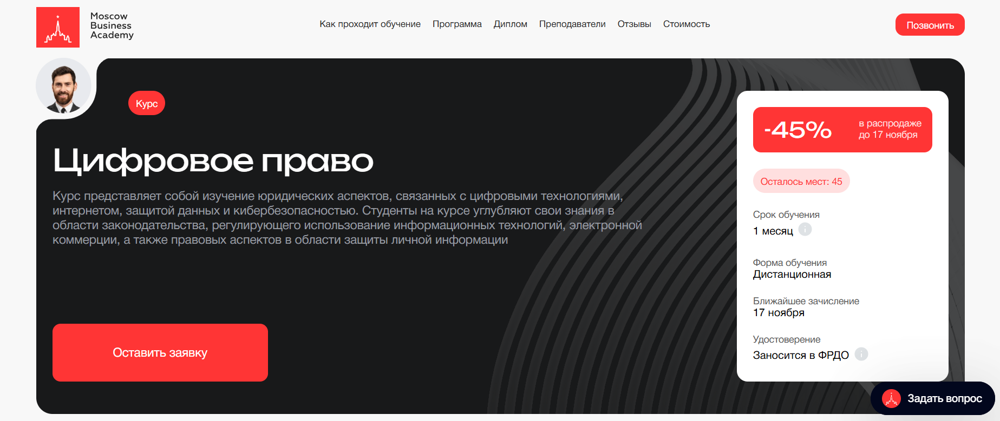- ✅ Официальный сайт: moscow.mba
- 💸 Цена обучения: от 59 889 ₽ (скидка 45%).
- 💳 Рассрочка: от 3 327 ₽/мес на 18 месяцев без переплаты, первый платеж через месяц.
- 📚 Формат: дистанционный формат, включает видеоматериалы, практическое задание и обратную связь от преподавателей.
- ⏳ Продолжительность: 1 месяц.
- 📜 Документ: удостоверение о повышении квалификации и сертификат, заносится в ФРДО.
- 📝 Трудоустройство: 65% выпускников находят работу в сфере IT и цифровых технологий в течение 3 месяцев после окончания обучения.
- 🔷 Для кого подходит курс: для юристов, владельцев стартапов, специалистов в сфере цифровых платформ и предпринимателей, желающих развить правовые навыки в области информационных технологий.
Особенности:
Программа в дистанционном формате обучения охватывает юридические аспекты цифровой среды, защиту данных и кибербезопасность. Обучение проходит онлайн, что позволяет совмещать обучение с работой и другими делами. Курсы повышения квалификации ориентированы на развитие профессиональных и практических навыков в сфере IT и информационных технологий. Программа включает практические задания и актуальные кейсы, связанные с правовым регулированием цифровых продуктов и электронных документов. Форматы обучения позволяют студенту изучать материалы в удобное время, а кураторы обеспечивают постоянную поддержку. После окончания курса выпускники получают удостоверение государственного образца, что подтверждает их квалификацию и готовность к юридической практике в сфере цифровых технологий.
Чему учатся студенты:
- Разбираться в юридических аспектах цифровых технологий и правовом сопровождении IT-проектов
- Анализировать правовые аспекты кибербезопасности и защиты данных
- Осваивать основы регулирования интернет-платформ и электронной коммерции
- Применять правовые знания для защиты интеллектуальных прав и цифровых продуктов
- Понимать принципы профессиональной этики юриста в сфере цифровых прав
Преподаватели:
- Павел Патрикеев — практикующий юрист в сфере IT и доменных споров, CEO и сооснователь юридического сервиса «Патрикеев и партнеры», эксперт по правовому регулированию интернета, член рабочих групп Координационного центра доменов RU/РФ.
Преимущества:
- Обучение проводится полностью онлайн в удобном формате
- Программа включает практические задания и реальные кейсы из сферы информационных технологий
- Доступ к материалам и видеолекциям из любой точки мира
- Преподаватели — эксперты с практическим опытом в IT-компаниях
- Государственная лицензия и аккредитация образовательных программ
- Возможность компенсировать до 100% стоимости обучения по программе привилегий
- Поддержка кураторов и индивидуальная обратная связь
Отзывы учеников:
Студенты Московской Бизнес Академии отмечают удобный дистанционный формат, качественные материалы и практическую направленность обучения. Отмечают высокий профессионализм преподавателей, актуальные примеры из сферы IT и возможность совмещать учебу с работой. Многие выпускники подчеркивают, что обучение помогло им развить правовые навыки и начать карьеру в сфере цифровых технологий.
Перейти на официальный сайт курса5. Цифровое право — Московский институт профессионального образования
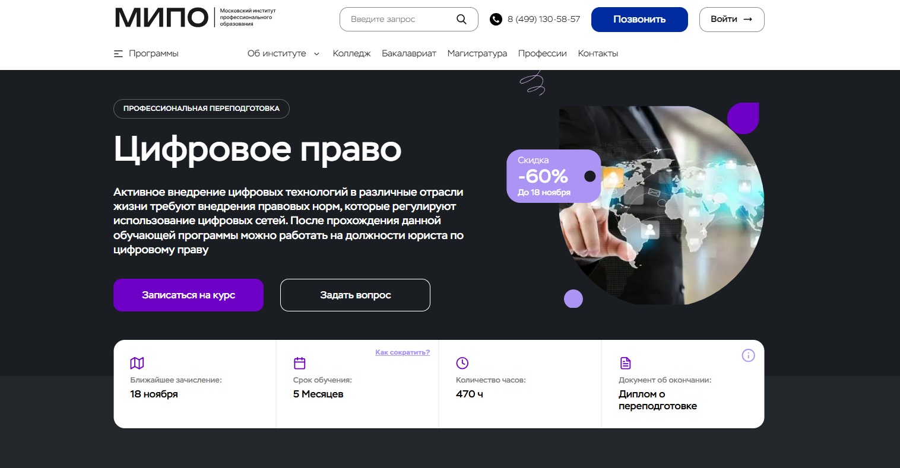- ✅ Официальный сайт: mipo.msk.ru
- 💸 Цена: от 39 600 ₽ (со скидкой -60%).
- 💳 Рассрочка: доступна от 1 650 ₽/мес до 24 месяцев без переплат.
- 📚 Формат: дистанционный формат обучения — онлайн-вебинары, лекции, тесты, практические задания и разборы кейсов.
- ⏳ Продолжительность: 5 месяцев (470 часов).
- 📜 Документ: диплом о профессиональной переподготовке с внесением в ФИС-ФРДО.
- 📝 Трудоустройство: выпускники работают в юридических департаментах компаний, в сфере IT и цифровых технологий, занимаются правовым сопровождением цифровых проектов.
- 🔷 Для кого подходит курс: начинающим юристам, специалистам смежных направлений, студентам и тем, кто хочет освоить аспекты цифровой юриспруденции.
Особенности:
Программа профессиональной переподготовки позволяет слушателям освоить правовые навыки работы в сфере цифровых платформ и информационных технологий. Обучение проходит в дистанционном формате, что позволяет совмещать обучение с работой и личным графиком. Студенты получают актуальные знания о регулировании цифровых прав, защите интеллектуальной собственности и данных. Образовательный процесс построен на практических кейсах и включает поддержку куратора. Форматы обучения разработаны с учетом требований работодателей и тенденций в сфере IT. После завершения программы выпускники получают диплом установленного образца, котируемый в России и за рубежом. Курс помогает получить необходимые профессиональные навыки для юридической практики в цифровой среде.
Чему учатся студенты:
- Изучают теорию государства и права
- Осваивают кибербезопасность и правовые аспекты защиты данных
- Изучают регулирование применения электронных документов
- Разбираются в цифровых доказательствах и электронной подписи
- Учатся защищать интеллектуальную собственность в сети
- Формируют практические навыки ведения юридических процессов
Преподаватели:
- Карпунина Ольга — юрист, предприниматель, эксперт по ведению переговоров в коммерческих и семейных спорах.
- Надоян Николай — практикующий юрист с опытом более 10 лет, участник международных конференций.
- Алексеев Алексей — специалист по внесудебному урегулированию споров, работал в государственных и частных структурах.
- Селюков Владимир — кандидат юридических наук, адвокат, следователь военной прокуратуры.
- Нестеров Сергей Сергеевич — старший преподаватель международного факультета РНИМУ, магистр юриспруденции.
- Могучев Роман — эксперт по корпоративному обучению, преподаватель ведущих ВУЗов Москвы.
Преимущества:
- Дистанционное образование с применением современных технологий
- Гибкий график обучения и возможность совмещать с работой
- Курс включает практические кейсы и реальные задачи
- Официальный диплом государственного образца с регистрацией в ФИС-ФРДО
- Обучение проводят эксперты с международным опытом
- Возможность работать в сфере цифровых прав и IT-компаниях
- Поддержка куратора и постоянная обратная связь
- Скидка 60% и возможность рассрочки без переплат
Отзывы учеников:
Студенты Московского института профессионального образования отмечают удобный формат дистанционных занятий, качественную подачу материала и профессионализм преподавателей. Среди плюсов чаще всего упоминают возможность совмещать учебу с работой, поддержку кураторов и практическую направленность курсов, которые помогают уверенно применять знания в юридической практике и строить успешную карьеру в сфере цифровых технологий.
Перейти на официальный сайт курса6. Защита персональных данных — Moscow Digital School
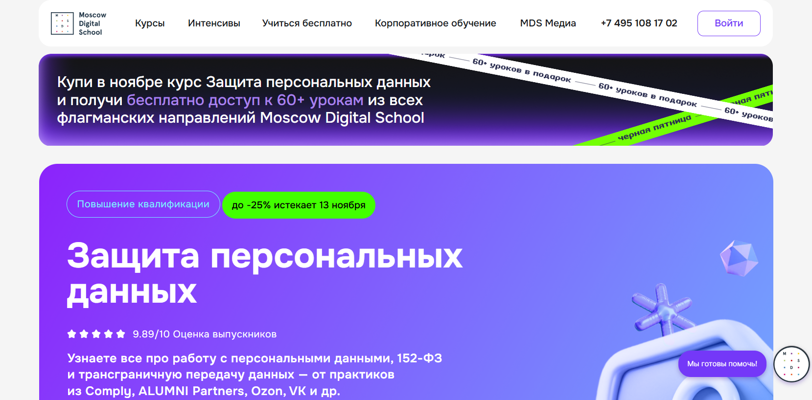- ✅ Официальный сайт: mosdigitals.ru
- 💸 Цена: от 102 600 ₽ до 285 000 ₽ в зависимости от тарифа (скидка до 25%).
- 💳 Рассрочка: на 12 месяцев — от 8 550 ₽/мес.
- 📚 Формат: дистанционный формат, видеолекции, конспекты, шаблоны, чек-листы, практические вебинары, тесты, бизнес-игры и аудиты компании.
- ⏳ Продолжительность: 5 месяцев, обучение проходит онлайн, доступ к материалам не ограничен.
- 📜 Документ: удостоверение о повышении квалификации государственного образца.
- 📝 Трудоустройство: карьерная поддержка, помощь в продвижении в профессии и подготовка к сертификации Data Protection Officer.
- 🔷 Для кого подходит курс: юристам и специалистам в сфере информационных технологий, работающим с персональными данными, а также тем, кто хочет развить правовые навыки в сфере цифровых технологий.
Особенности:
Программа ориентирована на практическое применение знаний и охватывает ключевые правовые аспекты обработки персональных данных. Обучение проводится в дистанционном формате, что позволяет совмещать обучение с работой и индивидуальным графиком. Курсы повышения квалификации включают практические навыки аудита компаний по требованиям 152-ФЗ, GDPR и других нормативов. Moscow Digital School использует современные дистанционные технологии и цифровые платформы, обеспечивая удобный формат обучения и доступ к полезным материалам. По окончании курса выпускники получают документ о квалификации и могут применять полученные знания в сфере цифровых прав и кибербезопасности. Обучение проводится в сопровождении кураторов и преподавателей с большим практическим опытом.
Чему учатся студенты:
- Разрабатывать и внедрять систему защиты персональных данных в компании
- Проводить аудит по 152-ФЗ и GDPR
- Работать с биометрическими и локализованными данными
- Оценивать риски и разрабатывать правовые документы
- Понимать международные аспекты цифровой приватности
- Использовать цифровые платформы и дистанционные технологии в юридической практике
Преподаватели:
- Алексей Мунтян — CEO Privacy Advocates, эксперт по персональным данным, участник разработки законопроектов по 152-ФЗ.
- Артем Дмитриев — управляющий партнер Comply, эксперт Роскомнадзора, член ассоциаций RPPA и IAPP.
- Денис Садовников — DPO, специалист по международному регулированию данных, сертификации GDPR и CIPP/E.
- Роман Власов — юрист Melling, Voitishkin & Partners, эксперт по интеллектуальной собственности и GDPR.
- Елена Трусова — партнер ALUMNI Partners, патентный поверенный, эксперт по ИТ-праву и антимонопольным спорам.
- Михаил Ратушный — руководитель практики защиты данных в Ozon, член IAPP и RPPA.
Преимущества:
- Дистанционное образование позволяет учиться в любой удобной форме
- Программы включают практические кейсы и задания от действующих экспертов
- Доступ к цифровым платформам и постоянной поддержке кураторов
- Карьерный центр помогает студентам строить успешную карьеру
- Обучение проходит с применением современных информационных технологий
- Студенты получают актуальные знания в сфере IT и цифровых прав
- Возможность совмещать обучение с профессиональной деятельностью
Отзывы учеников:
Выпускники отмечают удобный формат обучения, высокий уровень преподавателей и практическую направленность программы. Студенты подчеркивают, что курсы помогают освоить юридические аспекты цифровой сферы и успешно применить полученные знания в IT-компаниях. Многие выпускники говорят о росте дохода и карьерном продвижении после окончания курса.
Перейти на официальный сайт курса7. Юрист в e-com — MDS Медиа
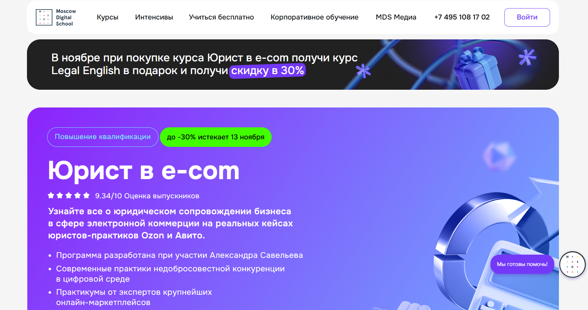- ✅ Официальный сайт: mosdigitals.ru
- 💸 Цена: 69 300 ₽ со скидкой 30%, действует акция – курс Legal English в подарок.
- 💳 Рассрочка: возможна по запросу на сайте школы от 5 775 ₽/мес.
- 📚 Формат: дистанционный формат обучения, видеолекции, практические вебинары, тесты и домашние задания.
- ⏳ Продолжительность: 3 месяца.
- 📜 Документ: удостоверение о повышении квалификации государственного образца.
- 📝 Трудоустройство: поддержка в карьерном центре, помощь в поиске работы и развитии личного бренда.
- 🔷 Для кого подходит курс: начинающим и практикующим юристам, специалистам из сферы it и цифровых технологий, а также руководителям и владельцам бизнеса, желающим освоить юридические аспекты e-commerce.
Особенности:
Обучение проходит в удобном дистанционном формате, что позволяет совмещать учебу с работой и личными проектами. Программа включает практические кейсы из цифровых платформ Ozon и Авито, где рассматриваются реальные юридические процессы в сфере электронной торговли. Студенты изучают правовые аспекты маркетплейсов, защиты данных и интеллектуальных прав. Благодаря применению дистанционных технологий обучение проходит в интерактивной форме, обеспечивая тесное взаимодействие с экспертами. Курс направлен на развитие профессиональных навыков и освоение правового регулирования цифровых бизнесов. По завершении обучения выпускники получают документ о повышении квалификации и могут применять полученные знания в сфере информационных технологий.
Чему учатся студенты:
- Разрабатывать и сопровождать договоры в e-commerce и it проектах
- Анализировать юридические аспекты цифровых платформ и рекламы
- Разрешать потребительские споры и защищать интеллектуальную собственность
- Применять правовые навыки при работе с персональными данными и цифровыми продуктами
- Понимать правовое регулирование информационных технологий и электронной коммерции
Преподаватели:
- Александр Савельев — к.ю.н., доцент НИУ ВШЭ, эксперт по информационному праву, член совета при Роскомнадзоре
- Евгения Жаркова — руководитель направления правового сопровождения коммерции Ozon
- Анатолий Семенов — генеральный директор Ассоциации параллельного импорта, эксперт по антимонопольному законодательству
- Антон Брагинец — генеральный директор DataCase, специалист по защите персональных данных
- Екатерина Смирнова — адвокат, партнер D&A Partners, эксперт по цифровым платформам
- Наталья Зубрилова — руководитель практики разрешения споров Авито
- Яна Склярова — заместитель начальника управления контроля рекламы ФАС России
- Алексей Минаев — директор по стратегическому развитию компании РВБ, бывший заместитель директора департамента цифровой экономики Минэкономразвития РФ
Преимущества:
- Дистанционное образование с возможностью учиться в любой удобной форме
- Курс включает практические задания и реальные кейсы из it компаний
- Преподаватели — эксперты с опытом юридической практики в крупнейших организациях
- Программа повышения квалификации аккредитована и дает официальный документ
- Карьерный центр помогает студентам выстроить успешную карьеру и обновить навыки
- Занятия проходят онлайн с доступом к материалам после завершения курса
- Обучение проводится с применением дистанционных образовательных технологий
- Возможность совмещать обучение с профессиональной деятельностью
Отзывы учеников:
Студенты MDS отмечают удобный формат и высокий уровень преподавания. По отзывам, курс помогает получить актуальные знания в сфере цифровых технологий и правовых аспектов e-commerce. Выпускники подчеркивают, что обучение проходит с практическим уклоном, а карьерный центр помогает в трудоустройстве и развитии профессиональных навыков.
Перейти на официальный сайт курса8. Цифровое право — Институт Профессионального Образования
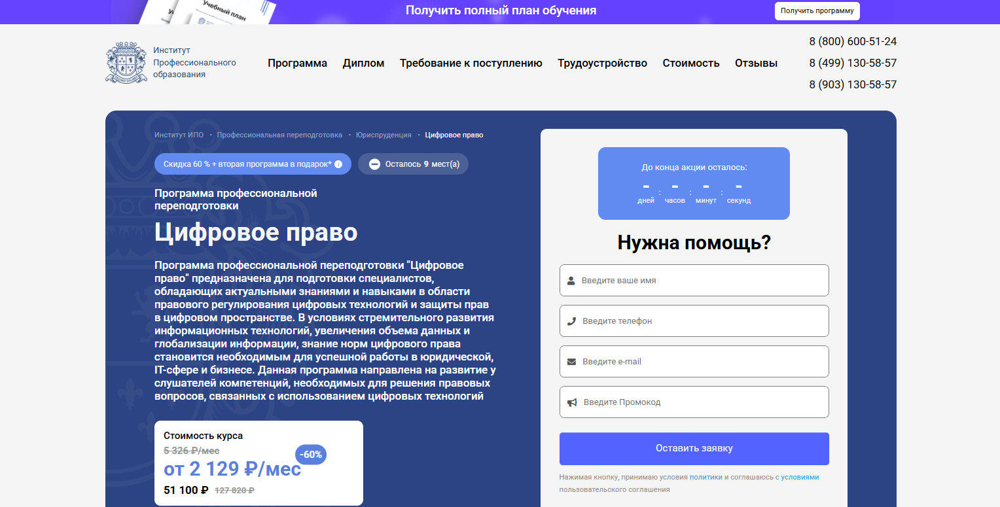- ✅ Официальный сайт: ipo.msk.ru
- 💸 Цена обучения: от 51 100 ₽ (со скидкой 60%).
- 💳 Рассрочка: от 2 129 ₽ в месяц на 24 месяца без переплаты.
- 📚 Формат: дистанционный формат, включает видеолекции, тесты, практические задания, вебинары и живое общение с преподавателями.
- ⏳ Продолжительность: 470 часов (5 месяцев).
- 📜 Документ: диплом о профессиональной переподготовке государственного образца.
- 📝 Трудоустройство: помощь в составлении резюме, консультации по карьере, рассылка анкет по компаниям-партнерам.
- 🔷 Для кого подходит курс: для юристов, специалистов в сфере IT, руководителей, разработчиков и всех, кто хочет развить правовые навыки в сфере цифровых технологий.
Особенности:
Обучение проводится с применением дистанционных технологий и подходит для любого удобного графика обучения. Программа направлена на развитие профессиональных навыков в сфере цифровых платформ, информационных технологий и защиты данных. Студенты получают знания по правовым аспектам цифровой экономики и учатся применять их в юридическую практику. Обучение проходит онлайн, что позволяет совмещать учебу с работой. Курс включает практические задания, кейсы и поддержку кураторов. По окончании обучения выпускники получают диплом и могут консультировать клиентов в сфере IT и цифровых продуктов. Такой формат помогает специалистам адаптироваться к современным требованиям цифровых юристов.
Чему учатся студенты:
- Анализировать правовые аспекты цифровых технологий и информационных процессов.
- Регулировать отношения в сфере IT-проектов, интеллектуальных прав и цифровых активов.
- Разрабатывать договоры для онлайн-платформ и сервисов.
- Осуществлять правовое сопровождение цифровых продуктов и интернет-бизнеса.
- Применять полученные знания для защиты данных и прав пользователей.
Преподаватели:
- Роман Александрович Шатов — выпускник юридического факультета МГУ, юрист с 10-летним стажем, победитель конференции «Ломоносов-2019».
- Людмила Тарасова — преподаватель с 25-летним опытом, медиатор, частнопрактикующий юрист, член Ассоциации Юристов России.
- Роман Могучев — эксперт в образовании и развитии персонала, преподаватель ведущих вузов Москвы, автор корпоративных программ обучения.
Преимущества:
- Удобный формат дистанционных обучения для любого графика.
- Программа охватывает юридические и технические аспекты цифрового права.
- Занятия проходят онлайн с обратной связью от кураторов.
- Поддержка при трудоустройстве и карьерных шагах после окончания курса.
- Профессиональные преподаватели с практическим опытом.
- Возможность совмещать обучение с работой и другими проектами.
- Доступ к материалам и практическим кейсам после завершения программы.
Отзывы учеников:
Студенты отмечают, что обучение проходит в удобном дистанционном формате с возможностью совмещать учебу и работу. Выпускники хвалят преподавателей за понятную подачу сложных юридических аспектов и ценят практические навыки, которые пригодились в сфере IT. Многие пишут, что курс помог освоить правовое сопровождение цифровых проектов и открыл новые карьерные возможности.
Перейти на официальный сайт курса9. Юрист по интеллектуальным правам — Русская Школа Управления
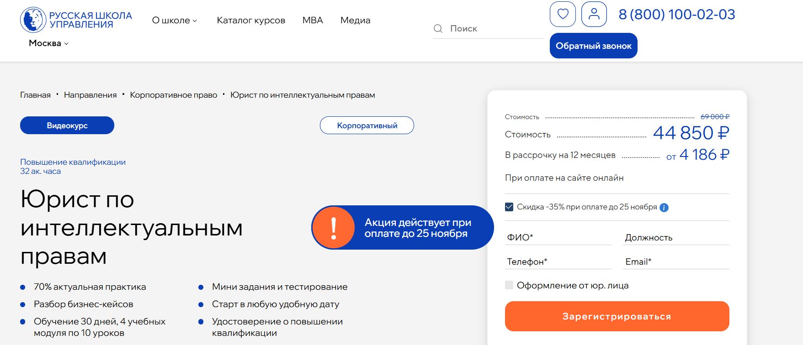- ✅ Официальный сайт: uprav.ru
- 💸 Цена: 44 850 ₽ (при оплате по акции — скидка 70%).
- 💳 Рассрочка: доступна от 4 186 ₽/мес до 12 месяцев без переплат.
- 📚 Формат: дистанционный формат с видеоуроками, мини-заданиями и тестированием. Обучение проходит на цифровых платформах с гибким графиком и возможностью совмещать обучение с работой.
- ⏳ Продолжительность: 30 дней, 4 учебных модуля по 10 уроков.
- 📜 Документ: удостоверение о повышении квалификации установленного государственного образца.
- 📝 Трудоустройство: выпускники укрепляют юридическую практику и повышают квалификацию для карьерного роста в сфере цифровых технологий и IT-компаниях.
- 🔷 Для кого подходит курс: для юристов, специалистов по договорной работе, руководителей и корпоративных юристов, желающих развить правовые навыки в сфере интеллектуальной собственности и информационных технологий.
Особенности:
Обучение проводится в дистанционном формате и подходит для специалистов, которые хотят повысить квалификацию без отрыва от работы. Программа курса включает теоретические и практические занятия, позволяющие студентам развивать профессиональные навыки в сфере цифровых прав и регулирования информационных процессов. Форматы обучения удобны для любого графика, а использование дистанционных технологий делает процесс обучения доступным и гибким. Слушатель получает знания по правовым аспектам цифровой экономики, защите данных и интеллектуальной собственности. Программа помогает юристам уверенно работать с правовым сопровождением IT-проектов и электронных документов, а также применять современные методы защиты информации.
Чему учатся студенты:
- Составлять и проверять договоры с учетом интеллектуальных прав и IT-технологий
- Эффективно управлять договорной работой и снижать юридические риски
- Проверять благонадежность контрагентов на основе цифровых источников
- Применять инструменты правового регулирования в сфере информационных технологий
- Выявлять и предотвращать нарушения в сфере интеллектуальной собственности
Преподаватели:
- Усачева Екатерина Павловна — юрист, член Ассоциации антимонопольных экспертов
- Фролова Екатерина Владимировна — практикующий адвокат, преподаватель, эксперт по корпоративному праву и договорной работе
- Озолина Ирина Гавриловна — патентный поверенный, адвокат, эксперт по защите интеллектуальных прав
Преимущества:
- Современные дистанционные форматы обучения с доступом к видеоматериалам 24/7
- 70% практики и 30% теории, направленные на развитие реальных правовых навыков
- Программа соответствует требованиям законодательства и стандартам профессионального образования
- Преподаватели — практикующие эксперты в сфере IT и интеллектуальной собственности
- После окончания курса студенты получают удостоверение государственного образца
- Обучение проходит онлайн, что позволяет совмещать работу и учебу
- Доступ к базе знаний РШУ с более чем 270 видеокурсами
- Поддержка кураторов и консультации по юридическим вопросам
Отзывы учеников:
Слушатели отмечают удобный формат и практическую направленность программы. По отзывам выпускников, курс помогает получить актуальные знания в сфере интеллектуальных прав и цифровых технологий, развить юридические навыки для работы с договорами и защитой данных. Многие студенты подчеркивают высокий уровень преподавания и доступность объяснений, что делает дистанционное обучение комфортным и результативным.
Перейти на официальный сайт курса10. Право для финансов — Академия SF Education
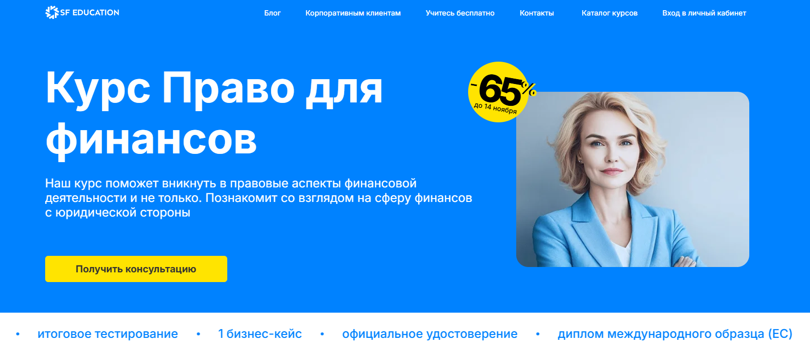- ✅ Официальный сайт: sf.education
- 💸 Цена: 5 520₽ со скидкой 65%.
- 💳 Рассрочка: беспроцентная от 460 ₽/мес на 12 месяцев, первый взнос через месяц.
- 📚 Формат: дистанционный формат, занятия проходят онлайн, включают вебинары, видеолекции, тесты и практические задания. Используются цифровые платформы и дистанционные технологии обучения.
- ⏳ Продолжительность: 1 месяц, 10 модулей, 38+ часов занятий.
- 📜 Документ: официальное удостоверение и диплом международного образца (ЕС, HISTES).
- 📝 Трудоустройство: карьерный центр помогает с составлением резюме, прохождением интервью и взаимодействием с партнёрами.
- 🔷 Для кого подходит курс: для студентов, специалистов и руководителей, желающих развить правовые навыки в сфере цифровых технологий, финансов и it-проектов.
Особенности:
Программа разработана для цифровых юристов, которым важно освоить юридические аспекты финансов и сферы it. Обучение проводится в дистанционном формате, что позволяет совмещать обучение с работой по любой удобной графику. В курс включены модули по правовому регулированию цифровых платформ, защите интеллектуальных прав и юридическому сопровождению проектов в сфере информационных технологий. Студенты получают доступ к образовательным материалам и обновлениям без ограничений после окончания курса. Обучение включает практические кейсы, реальную юридическую практику и задания, основанные на современных цифровых технологиях. По завершении программы слушатель получает диплом международного образца, подтверждающий квалификацию и уровень профессиональных навыков.
Чему учатся студенты:
- Осваивать правовые аспекты цифровых и финансовых процессов
- Анализировать договоры, сделки и юридические риски
- Разбираться в правовом регулировании информационных технологий
- Работать с интеллектуальной собственностью и защитой данных
- Понимать юридическое сопровождение it-проектов и цифровых продуктов
- Применять полученные знания на практике после завершения программы
Преподаватели:
- Инесса Кличманова — руководитель юридического департамента (Кипр), специалист в международном и корпоративном праве, победитель стипендиального конкурса Фонда Потанина, имеет опыт сопровождения компаний в ЕС, ЕАЭС и ЮАР.
Преимущества:
- Современные дистанционные форматы обучения на цифровых платформах
- Доступ к курсу и материалам остаётся навсегда
- Обучение проводится с применением дистанционных технологий и практических заданий
- Возможность совмещать обучение с работой и получать актуальные знания
- Программы включают правовые аспекты информационных технологий и интеллектуальных прав
- Курс помогает получить профессиональную переподготовку и повысить квалификацию
- Выпускники получают диплом международного образца и официальное удостоверение
- Поддержка карьерного роста и помощь с трудоустройством
Отзывы учеников:
Студенты Академии SF Education отмечают удобный дистанционный формат и практическую направленность занятий. Они подчеркивают, что обучение проходит в комфортном онлайн-формате, преподаватели оперативно отвечают на вопросы, а материалы помогают развить профессиональные и юридические навыки. После окончания курса многие выпускники отмечают рост квалификации и успешное применение знаний в сфере цифровых и финансовых процессов.
Перейти на официальный сайт курса11. Основы цифрового права — Национальный исследовательский университет «Высшая школа экономики»

- ✅ Официальный сайт: hse.ru
- 💸 Цена обучения: 55 000 ₽.
- 💳 Рассрочка: от 4 583 ₽/мес, налоговый вычет 13%, возможны скидки до 10% студентам и выпускникам НИУ ВШЭ.
- 📚 Формат: дистанционный формат, онлайн-занятия в режиме реального времени, доступ к записям и учебным материалам.
- ⏳ Продолжительность: 1,5 месяца (68 академических часов).
- 📜 Документ: удостоверение о повышении квалификации установленного образца НИУ ВШЭ.
- 📝 Трудоустройство: помогает юристам и специалистам по IT-комплаенсу укрепить позиции в цифровых компаниях.
- 🔷 Для кого подходит курс: для юристов, ИТ-разработчиков, интернет-предпринимателей, специалистов по медиа и коммуникациям.
Особенности:
Программа разработана для тех, кто хочет получить актуальные правовые навыки в сфере цифровых технологий. Обучение проводится в дистанционном формате, что позволяет совмещать обучение с работой и личными делами. Все занятия проходят онлайн с возможностью пересмотра записей после окончания курса. Программа сочетает юридические аспекты цифрового регулирования и практическое применение знаний на реальных кейсах. Студенты изучают современные подходы к защите информации, цифровым платформам и правам на интеллектуальную собственность. По окончании курса выпускники получают документ государственного образца, подтверждающий их квалификацию. Формат обучения позволяет студенту выбрать любой удобный график и получать актуальные знания в сфере IT-права.
Чему учатся студенты:
- Разрабатывать внутренние нормативные документы по работе с информацией и данными
- Овладевать технологиями правового сопровождения цифровых продуктов
- Изучать аспекты цифровой идентификации, аутентификации и авторизации
- Анализировать юридические аспекты электронных договоров и сделок
- Понимать правовое регулирование цифровых платформ, Big Data и персональных данных
- Применять правовые знания для защиты интеллектуальных прав и цифровых активов
Преподаватели:
- Авакян Елена Георгиевна — руководитель цифровой трансформации адвокатуры России, советник ФПА, заместитель Президента Гильдии Российских Адвокатов, старший преподаватель кафедры АБ ЕПАМ.
- Жирнова Наталья Александровна — заместитель руководителя департамента права цифровых технологий и биоправа НИУ ВШЭ, кандидат юридических наук.
- Солдаткина Оксана Леонидовна — доцент департамента права цифровых технологий и биоправа НИУ ВШЭ, кандидат юридических наук.
- Журавлев Михаил Сергеевич — старший преподаватель департамента права цифровых технологий и биоправа НИУ ВШЭ, кандидат юридических наук.
Преимущества:
- Дистанционное обучение проходит онлайн в удобном формате
- Программа включает практические задания, связанные с юридической практикой в IT-компаниях
- После завершения обучения студенты получают удостоверение о повышении квалификации
- Возможность совмещать обучение с профессиональной деятельностью
- Курс разработан ведущими экспертами в сфере цифровых прав и комплаенса
- Актуальные знания по правовому регулированию цифровых технологий и защите данных
- Обучение проводится на современной образовательной платформе Ispring
- Поддержка преподавателей и доступ к материалам после завершения программы
Отзывы учеников:
Выпускники отмечают практическую направленность программы и актуальные примеры из юридической практики. Студенты подчеркивают удобный дистанционный формат, качественную подачу материала и возможность совмещать обучение с работой. Особенно выделяют лекции Елены Авакян за структурированность и связь с реальными правовыми процессами в сфере IT и цифровых технологий.
Перейти на официальный сайт курса12. Автоматизация юридических процессов — НИУ ВШЭ и Нетология
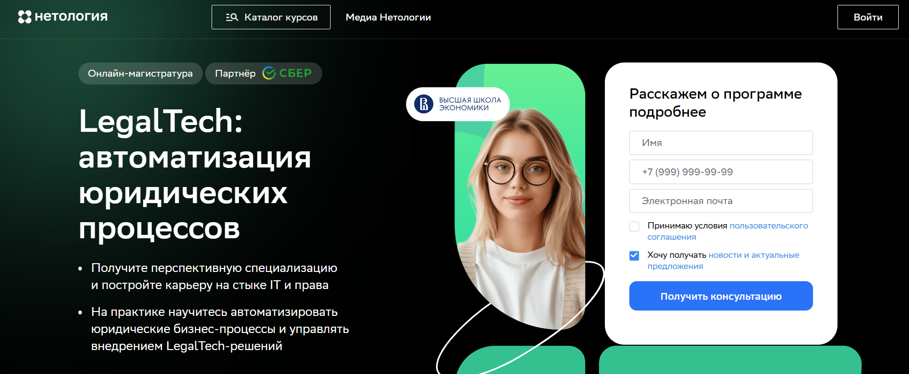- ✅ Официальный сайт: netology.ru
- 💸 Цена обучения: 220 000 ₽ за семестр.
- 💳 Рассрочка: доступна образовательная рассрочка и кредит под 3% с господдержкой.
- 📚 Формат: очное обучение в дистанционном формате — видеолекции, практические занятия, хакатоны, проекты и консультации с преподавателями.
- ⏳ Продолжительность: 2 года (1 октября 2026 — 25 июля 2028).
- 📜 Документ: диплом магистра государственного образца НИУ ВШЭ и диплом о профессиональной переподготовке Нетологии.
- 📝 Трудоустройство: практика и проекты с партнёрами — Ростелеком, Самолет, КонсультантПлюс, LegalPics.
- 🔷 Для кого подходит курс: для юристов, специалистов в сфере IT и выпускников бакалавриата, желающих развивать карьеру в LegalTech и сфере цифровых технологий.
Особенности:
Программа направлена на подготовку цифровых юристов, совмещающих юридические и технические компетенции. Обучение проходит онлайн в удобном формате, что позволяет совмещать учебу и работу. Студенты изучают аспекты цифровой трансформации права, правовые аспекты автоматизации и регулирования цифровых платформ. В процессе обучения развиваются профессиональные и практические навыки работы с LegalTech-решениями. Форматы обучения включают интерактивные лекции, практические проекты и работу с реальными кейсами. Обучение проводится с применением дистанционных технологий, что делает процесс гибким и современным. По окончании обучения выпускники получают квалификацию магистра и востребованные компетенции в сфере цифровых прав и информационных технологий.
Чему учатся студенты:
- Анализировать и автоматизировать юридические бизнес-процессы
- Разрабатывать шаблоны договоров с использованием Legal Design
- Создавать технические задания для IT-команд в сфере цифровых продуктов
- Разрабатывать и внедрять LegalTech-решения с применением no-code инструментов
- Понимать основы программирования и работать с Python
- Разбираться в правовом регулировании цифровых технологий и защите данных
Преподаватели:
- Хольгер Цшайге — ментор программы, генеральный директор Infotropic Media, преподает «Введение в LegalTech».
- Максим Лагутин — академический руководитель, исполнительный директор «Б152», эксперт по цифровым юристам.
- Юрий Донников — директор юридического департамента HeadHunter, ведет семинар «Введение в LegalTech».
- Юрист LegalTech Doczilla — автор вебинаров по конструктору документов.
Преимущества:
- Два диплома — государственного образца НИУ ВШЭ и дополнительный от Нетологии
- Дистанционный формат позволяет учиться из любой точки мира
- Реальные проекты с компаниями-партнёрами LegalTech-рынка
- Возможность получить отсрочку от армии и налоговый вычет
- Современные форматы обучения с применением дистанционных технологий
- Гибкий график обучения, позволяющий совмещать учебу и работу
- Практическое обучение с проектами и хакатонами
- Поддержка кураторов и наставников на всех этапах обучения
Отзывы учеников:
Студенты отмечают удобный дистанционный формат и возможность совмещать обучение с работой. Положительно оценивают практическую направленность, современные технологии и поддержку преподавателей. Многие подчеркивают, что после окончания программы значительно повысили квалификацию и начали работать в сфере IT-права и LegalTech-проектов.
Перейти на официальный сайт курсаКто такой IT-юрист?
IT-юрист — это специалист, который занимается правовым сопровождением деятельности в сфере информационных технологий. Он сочетает в себе знания классического права и глубокое понимание цифровых технологий, интернет-бизнеса, кибербезопасности и интеллектуальной собственности. В 2026 году профессия IT-юриста становится одной из самых востребованных в юридической и IT-сфере благодаря стремительному развитию цифровой экономики.
Что делает IT-юрист и чем он занимается?
Работа IT-юриста охватывает широкий круг задач, связанных с защитой данных, разработкой IT-контрактов, юридическим сопровождением стартапов, онлайн-сервисов и IT-компаний. Он обеспечивает соблюдение законодательства при работе с пользователями, клиентами и партнёрами.
- Разработка и проверка договоров (лицензионные, оферты, NDA, пользовательские соглашения).
- Правовое сопровождение IT-компаний, стартапов и онлайн-платформ.
- Консультации по вопросам обработки и защиты персональных данных (GDPR, ФЗ-152).
- Регистрация программного обеспечения, доменных имен и защита интеллектуальной собственности.
- Разрешение споров в интернете, киберпреступления и защита цифровой репутации.
- Сопровождение криптопроектов, блокчейна и FinTech-компаний.
Таким образом, IT-юрист — это не просто юрист, а эксперт, понимающий технологическую сторону бизнеса и умеющий адаптировать законы под быстро меняющуюся цифровую среду.
Что должен знать и уметь цифровой юрист?
Современный IT-юрист должен владеть не только юридическими знаниями, но и разбираться в цифровых технологиях, программном обеспечении и интернет-маркетинге. Это помогает грамотно выстраивать правовые отношения в онлайн-среде.
- Понимание IT-процессов, принципов работы сайтов, приложений, SaaS-сервисов.
- Знание международного и российского законодательства в области IT и кибербезопасности.
- Умение анализировать и составлять договоры в сфере IT.
- Навыки защиты интеллектуальной собственности и персональных данных.
- Понимание принципов блокчейна, криптовалют и электронной коммерции.
- Знание английского языка для работы с международными договорами и проектами.
Востребованность и зарплаты IT-юристов в России
С каждым годом спрос на IT-юристов в России растёт. По данным аналитических платформ труда, в 2026 году количество вакансий для специалистов в этой области увеличилось более чем на 30% по сравнению с 2023 годом. Это связано с активным развитием IT-компаний, цифровизацией государственных сервисов и усилением требований к защите данных.
Средняя зарплата IT-юриста в 2026 году:
- Начинающий специалист — от 80 000 до 120 000 рублей в месяц.
- Опытный юрист в IT-компании — от 150 000 до 250 000 рублей.
- Руководитель юридического отдела или консультант международных проектов — от 300 000 рублей и выше.
Особенно высоко ценятся специалисты, работающие с международными проектами, стартапами и блокчейн-платформами.
Как стать юристом в сфере цифрового права и где учиться?
Чтобы стать IT-юристом, необходимо получить юридическое образование и пройти дополнительное обучение в сфере информационных технологий. Современные университеты и онлайн-школы предлагают специализированные программы по цифровому праву.
- Получите базовое юридическое образование (бакалавриат/магистратура).
- Пройдите курсы по IT-праву, кибербезопасности, защите данных, FinTech и блокчейну.
- Практикуйтесь на стажировках в IT-компаниях, юридических фирмах, работающих с цифровыми продуктами.
- Следите за изменениями в законодательстве о цифровых технологиях и международных стандартах.
Преимущества профессии IT-юриста
- Высокая востребованность на рынке труда.
- Возможность работать с международными проектами и стартапами.
- Динамичное развитие сферы и постоянное профессиональное совершенствование.
- Вариативность карьерных путей: от корпоративного юриста до независимого консультанта.
- Работа на стыке технологий и права — актуальная и перспективная область.
Что включает обучение IT-юриста и почему оно востребовано?
Обучение IT-юриста включает изучение цифрового права, правового регулирования технологий, анализа рисков, работы с персональными данными и IT-контрактами. Востребованность растёт из-за цифровизации бизнеса, роста IT-компаний, стартапов и необходимости юридического сопровождения цифровых продуктов.
Какие навыки получает юрист в сфере IT после обучения?
После обучения юрист в сфере IT получает навыки анализа цифровых рисков, составления IT-договоров, аудита compliance, защиты персональных данных, сопровождения разработки ПО, консультирования по вопросам кибербезопасности и законодательству в области технологий.
Какие дисциплины входят в программы обучения цифровому праву?
Основные дисциплины включают:
- правовое регулирование IT и цифровой экономики;
- защиту данных и конфиденциальности;
- интеллектуальную собственность в IT;
- правовое сопровождение разработки ПО;
- регулирование интернет-платформ и e-commerce;
- основы кибербезопасности с юридическим уклоном.
Кому подходит обучение на IT-юриста?
Обучение подходит практикующим юристам, студентам юридических факультетов, специалистам compliance, предпринимателям в IT, product-менеджерам, digital-специалистам и всем, кто работает с цифровыми продуктами и хочет понимать правовые аспекты технологий.
Можно ли пройти обучение IT-юриста онлайн?
Да, большинство программ по цифровому праву доступно в онлайн-формате. Это удобно для совмещения с работой: обучение включает видеолекции, практические кейсы, разбор IT-контрактов и онлайн-консультации экспертов.
Сколько длится обучение цифровому праву?
Продолжительность зависит от формата: интенсивы занимают 1–2 месяца, профессиональные курсы — 3–6 месяцев, магистратура по IT-праву — 1,5–2 года. Короткие программы обычно дают базу, а длительные — полноценную профессию.
Какие карьерные перспективы после обучения IT-юриста?
Специалист по цифровому праву может работать в IT-компаниях, стартапах, консалтинге, банках, финтехе, e-commerce, кибербезопасности, государственных структурах, а также заниматься частной практикой в сфере IT-права.
Какие основные обязанности у юриста в сфере IT?
Обязанности включают:
- разработку и анализ IT-договоров;
- юридическое сопровождение разработки ПО;
- консультирование по вопросам персональных данных;
- работу с интеллектуальной собственностью;
- подготовку политики конфиденциальности и пользовательских соглашений;
- правовой аудит цифровых продуктов и сервисов.
Чем обучение цифровому праву отличается от классического юридического образования?
Оно сосредоточено на правовом регулировании технологий, включает разбор IT-кейсов, особенности работы со стартапами, международное IT-право, защиту данных, регулирование интернет-сервисов и кибербезопасность. Классическая юриспруденция таких аспектов не охватывает.
Нужен ли технический бэкграунд для освоения профессии IT-юриста?
Технические знания полезны, но необязательны. Достаточно понимать базовые принципы разработки, архитектуры сервисов, логики цифровых продуктов и кибербезопасности — всё это даётся в процессе обучения.
Какие IT-контракты изучают на обучении?
Чаще всего изучают:
- договоры разработки ПО (custom software development);
- SLA и договоры техподдержки;
- лицензионные соглашения;
- договоры NDA и NCA;
- договоры на внедрение IT-систем;
- EULA и пользовательские соглашения.
Как обучение IT-юриста помогает работать с персональными данными?
Обучение охватывает GDPR, локальное законодательство о персональных данных, требования к хранению, обработке и трансграничной передаче информации, подготовку документов по privacy и проведение аудитов соответствия.
Изучают ли на курсах цифрового права вопросы кибербезопасности?
Да, юрист получает знания о юридических аспектах кибербезопасности, реагировании на инциденты, защите цифровой инфраструктуры, требованиях регуляторов, а также об ответственности за киберпреступления.
Можно ли стать IT-юристом без юридического образования?
Да, существуют курсы для специалистов без юридического диплома. Однако для полноценной практики, подписания юридических заключений и работы в крупных структурах юридическое образование остаётся преимуществом.
Какие документы и политики учат составлять на обучении?
Среди основных документов:
- политика конфиденциальности;
- пользовательское соглашение;
- политика обработки cookies;
- политика безопасности данных;
- комплаенс-регламенты для IT-компаний;
- внутренние документы по цифровой безопасности.
Как обучение IT-праву помогает IT-компаниям и стартапам?
IT-юрист помогает избежать юридических рисков, защитить интеллектуальную собственность, правильно оформлять отношения с разработчиками, соблюсти требования по персональным данным, подготовить цифровые политики и обеспечить безопасный запуск продукта.
Есть ли международные программы обучения цифровому праву?
Да, международные университеты и онлайн-платформы предлагают программы по IT-праву, GDPR-compliance, защите данных и международному регулированию технологий. Это полезно тем, кто работает с глобальными продуктами.
Какое будущее у профессии IT-юриста?
Профессия развивается вместе с технологическим рынком. С ростом искусственного интеллекта, big data, блокчейна и автоматизации потребность в юристах, которые понимают цифровые процессы и технологии, будет только усиливаться.
------------------------------------------------
Реклама. Информация о рекламодателе по ссылкам в статье.